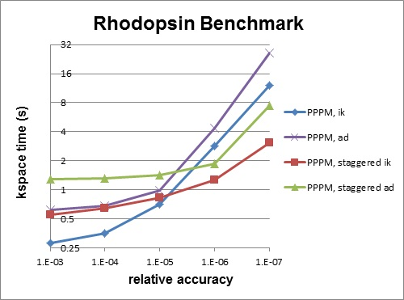

5. Accelerating LAMMPS performance¶
This section describes various methods for improving LAMMPS performance for different classes of problems running on different kinds of machines.
There are two thrusts to the discussion that follows. The first is using code options that implement alternate algorithms that can speed-up a simulation. The second is to use one of the several accelerator packages provided with LAMMPS that contain code optimized for certain kinds of hardware, including multi-core CPUs, GPUs, and Intel Xeon Phi coprocessors.
- 5.1 Measuring performance
- 5.2 Algorithms and code options to boost performace
- 5.3 Accelerator packages with optimized styles
- 5.3.1 USER-CUDA package
- 5.3.2 GPU package
- 5.3.3 USER-INTEL package
- 5.3.4 KOKKOS package
- 5.3.5 USER-OMP package
- 5.3.6 OPT package
- 5.4 Comparison of various accelerator packages
The Benchmark page of the LAMMPS web site gives performance results for the various accelerator packages discussed in Section 5.2, for several of the standard LAMMPS benchmark problems, as a function of problem size and number of compute nodes, on different hardware platforms.
5.1. Measuring performance¶
Before trying to make your simulation run faster, you should understand how it currently performs and where the bottlenecks are.
The best way to do this is run the your system (actual number of atoms) for a modest number of timesteps (say 100 steps) on several different processor counts, including a single processor if possible. Do this for an equilibrium version of your system, so that the 100-step timings are representative of a much longer run. There is typically no need to run for 1000s of timesteps to get accurate timings; you can simply extrapolate from short runs.
For the set of runs, look at the timing data printed to the screen and log file at the end of each LAMMPS run. This section of the manual has an overview.
Running on one (or a few processors) should give a good estimate of the serial performance and what portions of the timestep are taking the most time. Running the same problem on a few different processor counts should give an estimate of parallel scalability. I.e. if the simulation runs 16x faster on 16 processors, its 100% parallel efficient; if it runs 8x faster on 16 processors, it’s 50% efficient.
The most important data to look at in the timing info is the timing breakdown and relative percentages. For example, trying different options for speeding up the long-range solvers will have little impact if they only consume 10% of the run time. If the pairwise time is dominating, you may want to look at GPU or OMP versions of the pair style, as discussed below. Comparing how the percentages change as you increase the processor count gives you a sense of how different operations within the timestep are scaling. Note that if you are running with a Kspace solver, there is additional output on the breakdown of the Kspace time. For PPPM, this includes the fraction spent on FFTs, which can be communication intensive.
Another important detail in the timing info are the histograms of atoms counts and neighbor counts. If these vary widely across processors, you have a load-imbalance issue. This often results in inaccurate relative timing data, because processors have to wait when communication occurs for other processors to catch up. Thus the reported times for “Communication” or “Other” may be higher than they really are, due to load-imbalance. If this is an issue, you can uncomment the MPI_Barrier() lines in src/timer.cpp, and recompile LAMMPS, to obtain synchronized timings.
5.2. General strategies¶
Note
this section 5.2 is still a work in progress
Here is a list of general ideas for improving simulation performance. Most of them are only applicable to certain models and certain bottlenecks in the current performance, so let the timing data you generate be your guide. It is hard, if not impossible, to predict how much difference these options will make, since it is a function of problem size, number of processors used, and your machine. There is no substitute for identifying performance bottlenecks, and trying out various options.
- rRESPA
- 2-FFT PPPM
- Staggered PPPM
- single vs double PPPM
- partial charge PPPM
- verlet/split run style
- processor command for proc layout and numa layout
- load-balancing: balance and fix balance
2-FFT PPPM, also called analytic differentiation or ad PPPM, uses 2 FFTs instead of the 4 FFTs used by the default ik differentiation PPPM. However, 2-FFT PPPM also requires a slightly larger mesh size to achieve the same accuracy as 4-FFT PPPM. For problems where the FFT cost is the performance bottleneck (typically large problems running on many processors), 2-FFT PPPM may be faster than 4-FFT PPPM.
Staggered PPPM performs calculations using two different meshes, one shifted slightly with respect to the other. This can reduce force aliasing errors and increase the accuracy of the method, but also doubles the amount of work required. For high relative accuracy, using staggered PPPM allows one to half the mesh size in each dimension as compared to regular PPPM, which can give around a 4x speedup in the kspace time. However, for low relative accuracy, using staggered PPPM gives little benefit and can be up to 2x slower in the kspace time. For example, the rhodopsin benchmark was run on a single processor, and results for kspace time vs. relative accuracy for the different methods are shown in the figure below. For this system, staggered PPPM (using ik differentiation) becomes useful when using a relative accuracy of slightly greater than 1e-5 and above.
Note
Using staggered PPPM may not give the same increase in accuracy of energy and pressure as it does in forces, so some caution must be used if energy and/or pressure are quantities of interest, such as when using a barostat.
5.3. Packages with optimized styles¶
Accelerated versions of various pair_style, fixes, computes, and other commands have been added to LAMMPS, which will typically run faster than the standard non-accelerated versions. Some require appropriate hardware to be present on your system, e.g. GPUs or Intel Xeon Phi coprocessors.
All of these commands are in packages provided with LAMMPS. An overview of packages is give in Section packages.
These are the accelerator packages currently in LAMMPS, either as standard or user packages:
| USER-CUDA | for NVIDIA GPUs |
| GPU | for NVIDIA GPUs as well as OpenCL support |
| USER-INTEL | for Intel CPUs and Intel Xeon Phi |
| KOKKOS | for GPUs, Intel Xeon Phi, and OpenMP threading |
| USER-OMP | for OpenMP threading |
| OPT | generic CPU optimizations |
Inverting this list, LAMMPS currently has acceleration support for three kinds of hardware, via the listed packages:
| Many-core CPUs | USER-INTEL, KOKKOS, USER-OMP, OPT packages |
| NVIDIA GPUs | USER-CUDA, GPU, KOKKOS packages |
| Intel Phi | USER-INTEL, KOKKOS packages |
Which package is fastest for your hardware may depend on the size problem you are running and what commands (accelerated and non-accelerated) are invoked by your input script. While these doc pages include performance guidelines, there is no substitute for trying out the different packages appropriate to your hardware.
Any accelerated style has the same name as the corresponding standard style, except that a suffix is appended. Otherwise, the syntax for the command that uses the style is identical, their functionality is the same, and the numerical results it produces should also be the same, except for precision and round-off effects.
For example, all of these styles are accelerated variants of the Lennard-Jones pair_style lj/cut:
- pair_style lj/cut/cuda
- pair_style lj/cut/gpu
- pair_style lj/cut/intel
- pair_style lj/cut/kk
- pair_style lj/cut/omp
- pair_style lj/cut/opt
To see what accelerate styles are currently available, see Section_commands 5 of the manual. The doc pages for individual commands (e.g. pair lj/cut or fix nve) also list any accelerated variants available for that style.
To use an accelerator package in LAMMPS, and one or more of the styles it provides, follow these general steps. Details vary from package to package and are explained in the individual accelerator doc pages, listed above:
| build the accelerator library | only for USER-CUDA and GPU packages |
| install the accelerator package | make yes-opt, make yes-user-intel, etc |
only for USER-INTEL, KOKKOS, USER-OMP, OPT packages |
| re-build LAMMPS | make machine |
mpirun -np 32 lmp_machine -in in.script |
only for USER-CUDA and KOKKOS packages |
package command, <br> only if defaults need to be changed |
suffix command |
Note that the first 4 steps can be done as a single command, using the src/Make.py tool. This tool is discussed in Section 2.4 of the manual, and its use is illustrated in the individual accelerator sections. Typically these steps only need to be done once, to create an executable that uses one or more accelerator packages.
The last 4 steps can all be done from the command-line when LAMMPS is launched, without changing your input script, as illustrated in the individual accelerator sections. Or you can add package and suffix commands to your input script.
Note
With a few exceptions, you can build a single LAMMPS executable with all its accelerator packages installed. Note however that the USER-INTEL and KOKKOS packages require you to choose one of their hardware options when building for a specific platform. I.e. CPU or Phi option for the USER-INTEL package. Or the OpenMP, Cuda, or Phi option for the KOKKOS package.
These are the exceptions. You cannot build a single executable with:
- both the USER-INTEL Phi and KOKKOS Phi options
- the USER-INTEL Phi or Kokkos Phi option, and either the USER-CUDA or GPU packages
See the examples/accelerate/README and make.list files for sample Make.py commands that build LAMMPS with any or all of the accelerator packages. As an example, here is a command that builds with all the GPU related packages installed (USER-CUDA, GPU, KOKKOS with Cuda), including settings to build the needed auxiliary USER-CUDA and GPU libraries for Kepler GPUs:
Make.py -j 16 -p omp gpu cuda kokkos -cc nvcc wrap=mpi -cuda mode=double arch=35 -gpu mode=double arch=35 -kokkos cuda arch=35 lib-all file mpi
The examples/accelerate directory also has input scripts that can be used with all of the accelerator packages. See its README file for details.
Likewise, the bench directory has FERMI and KEPLER and PHI sub-directories with Make.py commands and input scripts for using all the accelerator packages on various machines. See the README files in those dirs.
As mentioned above, the Benchmark page of the LAMMPS web site gives performance results for the various accelerator packages for several of the standard LAMMPS benchmark problems, as a function of problem size and number of compute nodes, on different hardware platforms.
Here is a brief summary of what the various packages provide. Details are in the individual accelerator sections.
- Styles with a “cuda” or “gpu” suffix are part of the USER-CUDA or GPU packages, and can be run on NVIDIA GPUs. The speed-up on a GPU depends on a variety of factors, discussed in the accelerator sections.
- Styles with an “intel” suffix are part of the USER-INTEL package. These styles support vectorized single and mixed precision calculations, in addition to full double precision. In extreme cases, this can provide speedups over 3.5x on CPUs. The package also supports acceleration in “offload” mode to Intel(R) Xeon Phi(TM) coprocessors. This can result in additional speedup over 2x depending on the hardware configuration.
- Styles with a “kk” suffix are part of the KOKKOS package, and can be run using OpenMP on multicore CPUs, on an NVIDIA GPU, or on an Intel Xeon Phi in “native” mode. The speed-up depends on a variety of factors, as discussed on the KOKKOS accelerator page.
- Styles with an “omp” suffix are part of the USER-OMP package and allow a pair-style to be run in multi-threaded mode using OpenMP. This can be useful on nodes with high-core counts when using less MPI processes than cores is advantageous, e.g. when running with PPPM so that FFTs are run on fewer MPI processors or when the many MPI tasks would overload the available bandwidth for communication.
- Styles with an “opt” suffix are part of the OPT package and typically speed-up the pairwise calculations of your simulation by 5-25% on a CPU.
The individual accelerator package doc pages explain:
- what hardware and software the accelerated package requires
- how to build LAMMPS with the accelerated package
- how to run with the accelerated package either via command-line switches or modifying the input script
- speed-ups to expect
- guidelines for best performance
- restrictions
5.4. Comparison of various accelerator packages¶
Note
this section still needs to be re-worked with additional KOKKOS and USER-INTEL information.
The next section compares and contrasts the various accelerator options, since there are multiple ways to perform OpenMP threading, run on GPUs, and run on Intel Xeon Phi coprocessors.
All 3 of these packages accelerate a LAMMPS calculation using NVIDIA hardware, but they do it in different ways.
As a consequence, for a particular simulation on specific hardware, one package may be faster than the other. We give guidelines below, but the best way to determine which package is faster for your input script is to try both of them on your machine. See the benchmarking section below for examples where this has been done.
Guidelines for using each package optimally:
- The GPU package allows you to assign multiple CPUs (cores) to a single GPU (a common configuration for “hybrid” nodes that contain multicore CPU(s) and GPU(s)) and works effectively in this mode. The USER-CUDA package does not allow this; you can only use one CPU per GPU.
- The GPU package moves per-atom data (coordinates, forces) back-and-forth between the CPU and GPU every timestep. The USER-CUDA package only does this on timesteps when a CPU calculation is required (e.g. to invoke a fix or compute that is non-GPU-ized). Hence, if you can formulate your input script to only use GPU-ized fixes and computes, and avoid doing I/O too often (thermo output, dump file snapshots, restart files), then the data transfer cost of the USER-CUDA package can be very low, causing it to run faster than the GPU package.
- The GPU package is often faster than the USER-CUDA package, if the number of atoms per GPU is smaller. The crossover point, in terms of atoms/GPU at which the USER-CUDA package becomes faster depends strongly on the pair style. For example, for a simple Lennard Jones system the crossover (in single precision) is often about 50K-100K atoms per GPU. When performing double precision calculations the crossover point can be significantly smaller.
- Both packages compute bonded interactions (bonds, angles, etc) on the CPU. This means a model with bonds will force the USER-CUDA package to transfer per-atom data back-and-forth between the CPU and GPU every timestep. If the GPU package is running with several MPI processes assigned to one GPU, the cost of computing the bonded interactions is spread across more CPUs and hence the GPU package can run faster.
- When using the GPU package with multiple CPUs assigned to one GPU, its performance depends to some extent on high bandwidth between the CPUs and the GPU. Hence its performance is affected if full 16 PCIe lanes are not available for each GPU. In HPC environments this can be the case if S2050/70 servers are used, where two devices generally share one PCIe 2.0 16x slot. Also many multi-GPU mainboards do not provide full 16 lanes to each of the PCIe 2.0 16x slots.
Differences between the two packages:
- The GPU package accelerates only pair force, neighbor list, and PPPM calculations. The USER-CUDA package currently supports a wider range of pair styles and can also accelerate many fix styles and some compute styles, as well as neighbor list and PPPM calculations.
- The USER-CUDA package does not support acceleration for minimization.
- The USER-CUDA package does not support hybrid pair styles.
- The USER-CUDA package can order atoms in the neighbor list differently from run to run resulting in a different order for force accumulation.
- The USER-CUDA package has a limit on the number of atom types that can be used in a simulation.
- The GPU package requires neighbor lists to be built on the CPU when using exclusion lists or a triclinic simulation box.
- The GPU package uses more GPU memory than the USER-CUDA package. This is generally not a problem since typical runs are computation-limited rather than memory-limited.
5.4.1. Examples¶
The LAMMPS distribution has two directories with sample input scripts for the GPU and USER-CUDA packages.
- lammps/examples/gpu = GPU package files
- lammps/examples/USER/cuda = USER-CUDA package files
These contain input scripts for identical systems, so they can be used to benchmark the performance of both packages on your system.